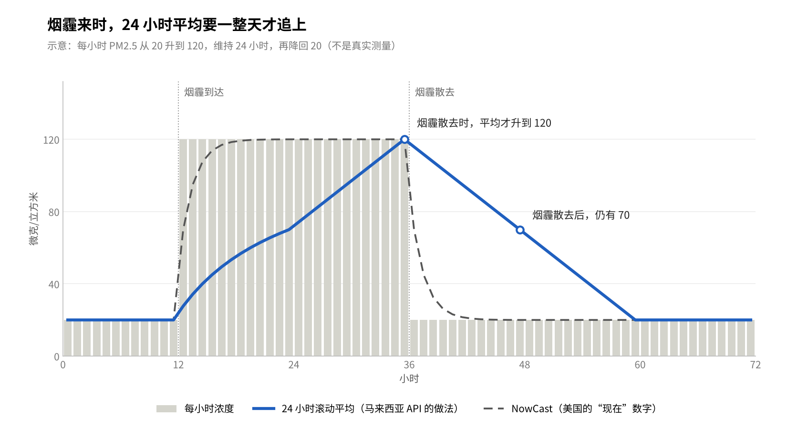
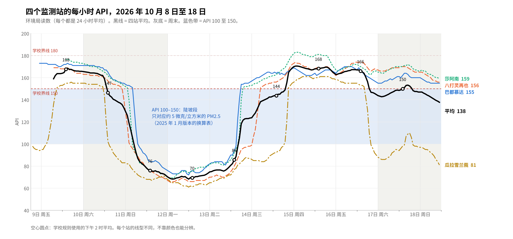
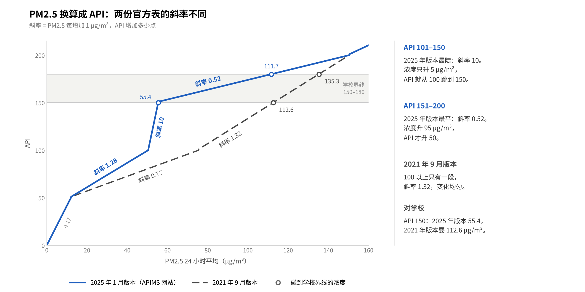

马来西亚 API 是怎样算出来的？
24 小时平均带来的滞后，以及与新加坡、美国、中国和香港的比较
摘要
马来西亚的 API 看的是过去 24 小时的平均空气，不是此刻的空气。所以烟霾来时，API 升得慢；烟霾走后，API 降得也慢。本文说明 API 的计算方法，用学校附近四个监测站的每小时数据说明这种滞后，与新加坡、美国、中国和香港比较，最后讨论取得较即时 PM2.5 数据的两个途径。
本文为个人整理，仅供参考。作者以家长个人身份撰写，不代表学校立场，也不构成健康建议。
引言
很多家长有过这样的经历：窗外很灰，闻到烟味，但 API 还显示“中等”。打开外国的空气 App，同一时间却显示“不健康”。哪个数字是对的？
两个数字都可能没有错。它们只是在回答不同的问题。本文用简单的话说明三件事：
- API 是怎样算出来的；
- 为什么 24 小时平均会“慢半拍”；
- 新加坡、美国、中国和香港怎样处理同一个问题。
一、API 是什么
API 是“空气污染指数”（Air Pollutant Index），由马来西亚环境局（DOE）公布。它把空气里的污染物换算成一个没有单位的数字。数字越大，空气越差。
| API | 状态 | 环境局的健康建议（简化） |
|---|---|---|
| 0–50 | 良好 | 户外活动不受限制 |
| 51–100 | 中等 | 户外活动不受限制 |
| 101–200 | 不健康 | 老人、孕妇、儿童和心肺病患者减少户外活动 |
| 201–300 | 非常不健康 | 高风险人群留在室内 |
| 301 以上 | 危险 | 公众避免户外活动 |
环境局在全国有 68 个监测站，每小时更新一次 API。官方的查看渠道是 APIMS 网站和 MyJAS EQMS 手机 App。
二、API 怎样计算
API 等于六种污染物“分指数”中最高的一个。环境局的官方计算文件分三步说明：
- 测量六种污染物。 它们是 PM2.5、PM10、臭氧、一氧化碳、二氧化氮和二氧化硫。
- 按各自的时间求平均。 每种污染物的平均时间不同，因为人体能承受的接触时间不同。
- 换算成分指数，再取最高值。 每个平均浓度用一条公式换算成 0 至 500 的分指数。最高的分指数就是该站的 API。
| 污染物 | 平均时间 |
|---|---|
| PM2.5（细悬浮微粒） | 24 小时 |
| PM10（可吸入悬浮微粒） | 24 小时 |
| 臭氧 | 8 小时，也看 1 小时 |
| 一氧化碳 | 8 小时 |
| 二氧化氮 | 1 小时 |
| 二氧化硫 | 1 小时 |
举例：某站 PM2.5 的分指数是 152，臭氧是 40，其他更低。那么该站 API 就是 152，主要污染物是 PM2.5。
环境局的文件也说明，在马来西亚，API 大多数时候由微粒决定，烟霾期间尤其如此。PM2.5 从 2017 年起列入计算（文件的写法），新闻多以 2018 年 8 月为对外公布的开始。换算公式放在本文附录。
三、公布了什么，没有公布什么
环境局公布每站每小时的 API 和主要污染物，也公布了换算公式；但公众看不到每小时的 PM2.5 浓度。
- 公布了： 每小时的 API 数字、状态和主要污染物。
- 公布了： PM2.5 等污染物换算成 API 的公式。环境局网站上有官方的《API 计算》文件，用马来文和英文写成。
- 没有公布： 每小时的 PM2.5 浓度（单位：微克/立方米）。马来亚大学的 Helena Varkkey 副教授指出，政府手上有每小时数据，只是没有对外公布。
所以，一般公众只能看到 24 小时平均后的 API。看不到“这一个小时”的空气有多差。
一个需要注意的地方： 环境局有两份官方《API 计算》文件：2021 年 9 月版本（环境局网站）和 2026 年 10 月 14 日发布的版本（APIMS 网站）。两者的 PM2.5 换算数字不一样（见附录一）。本文以较新的 2026 年 10 月版本为准。这不影响本文的主要结论：24 小时平均会带来滞后。
四、为什么 24 小时平均会“慢半拍”
24 小时滚动平均每小时只换掉二十四分之一的数据。所以烟霾来了，要约一天才完全反映；烟霾走了，也要约一天才消失。
- 每过一小时，平均值加入最新的一小时，去掉 24 小时前的一小时。
- 最新的一小时只占平均值的二十四分之一。
- 所以 API 的高峰比实际高峰来得晚，也比实际高峰低。一项用曼谷数据的研究发现，这种平均比每小时数据晚约 10 至 13 小时。

烟霾到达后，美国的 NowCast 几小时内就升高。24 小时平均却要到烟霾散去时才升到最高，之后又要一整天才降回来。
学校监测数据中的例子
- 10 月 17 日下午 2 时，四站平均 API 是 150。这个数字代表 16 日下午 3 时至 17 日下午 2 时的空气，不只是 17 日下午的空气。
- 到 18 日早上 10 时，平均还有 139，只比前一天下午低 11 点。空气即使已经好转，数字也是慢慢下降。
- 例外： 按 2026 年 10 月版本的换算表，API 101 至 150 只对应约 5 微克/立方米的浓度差。所以 API 在这一段可以变得很快。例如 10 月 16 日下午 4 时至晚上 8 时，瓜拉雪兰莪站从 152 降到 99。在 150 附近，很小的浓度变化就足以使 API 跨过这个数值。
四个站的每小时数据
下图是 10 月 8 日晚上至 18 日上午 11 时，四个站全部的每小时 API。浅蓝色带标出 API 100 至 150 这一段。

- 单一站点穿过 100–150 很快。 通常只要几个小时，例如 10 至 11 日的下降、13 至 14 日的上升，以及 16 日傍晚瓜拉雪兰莪站的急降。这符合这一段很陡的特点。
- 四站平均却会在 100–150 停留较久。 例如 17 日至今：三个吉隆坡和雪兰莪的站在 150 以上，瓜拉雪兰莪站在 100 以下，平均刚好落在中间。
- 所以，平均落在 100–150，不一定表示某个站在这一段。 更常见的情况是站与站之间差距很大。
- 瓜拉雪兰莪站常常不同。 它靠海，常比其他三站低，升降也更急。这可能与海风有关，但还没有用风向数据验证。
五、其他地方怎样做
新加坡、美国、中国和香港也用 24 小时或较长的平均来评估健康风险，但都另外给公众一个“较即时”的数字。马来西亚是这五个地方中唯一只给一个 24 小时数字的。
| 地方 | 主要指数 | 主要指数的平均时间 | 较即时的数字 | 政府建议的用法 |
|---|---|---|---|---|
| 马来西亚 | API | PM2.5：24 小时滚动平均 | 没有 | 只看 API |
| 新加坡 | PSI | 24 小时 | 1 小时 PM2.5 浓度，分四级（正常、偏高、高、非常高），2016 年起分级 | 马上要做的活动看 1 小时 PM2.5；计划明天的活动看 24 小时 PSI 预报 |
| 美国 | AQI | 每日 AQI：当天零时至午夜的 24 小时平均 | NowCast：过去 12 小时的加权平均；空气变化快时，接近 3 小时平均 | 官方地图和 App 显示的“现在”就是 NowCast |
| 中国 | AQI | 日报：24 小时平均 | 实时报每小时公布 PM2.5 的 1 小时浓度和 24 小时平均浓度 | 日报看全天，实时报看现在 |
| 香港 | AQHI（1 至 10+） | 3 小时移动平均，四种污染物的健康风险相加 | 指数本身就是 3 小时；另外每小时公布 PM2.5 浓度（2012 年起） | 按健康风险级别调整活动 |
几个重点：
- 新加坡的做法和马来西亚最接近，但多了一个 1 小时 PM2.5。新马两地常被拿来比较，其实比较时要先看清楚是 1 小时还是 24 小时的数字。
- 美国的 NowCast 是一个折中：在空气稳定时像 12 小时平均，在空气变化快时像 3 小时平均。美国环境保护局的例子是：一小时的高峰过后，NowCast 每过一小时减半；同一天的 24 小时平均只剩高峰的二十四分之一。
- 香港在 2013 年底改用 AQHI，直接用 3 小时平均，所以反应最快。
马来西亚学者 Varkkey 和 Ashfold 在 2023 年建议：公布每小时 PM2.5 不需要新的设备，只是把已有的数据公开。
六、讨论
- 两种数字回答不同的问题。 24 小时平均反映过去一整天的累积接触，适合与以 24 小时为单位的健康标准比较；每小时数字反映当下的空气。
- 两者的差别在空气快速变化时最明显。 烟霾刚到达时，24 小时平均偏低；烟霾刚散去时，24 小时平均偏高（见图 1）。空气稳定时，两者接近。
- 其他地方的官方做法。 新加坡国家环境局的说法是：即时活动参考 1 小时 PM2.5，次日计划参考 24 小时 PSI 预报。美国的官方地图以 NowCast 显示“现在”的数字。
- 学者的看法。 双威大学的 Fatimah Ahamad 博士在接受 SAYS 访问时表示，较长的平均时间能反映累积的健康风险，但在烟霾突然加重时，可能掩盖正在形成的烟霾。
- 外国 App 的数字与 API 不能直接比较。 环境局在 2026 年 10 月说明，两者的标准、平均时间和更新时间都不同。
七、实时 PM2.5 从哪里来
API 有滞后，而环境局不公布每小时 PM2.5 浓度。要看到较即时的空气情况，有两个途径。
附近的低成本传感器
- 本网站从 2026 年 10 月 18 日起，每小时收集一个低成本传感器的读数。它位于 Rawang Anggun（Jalan Anggun 3P），距离学校约 2.7 公里；最近的环境局监测站在 19 公里外。
- 传感器型号是 GAIA A08，内有一个 Plantower PMS5003 激光颗粒计数器，数据经 aqicn.org 公开。
- 本网站把它的读数与四个环境局监测站比较，结果见传感器比较页面。目前数据太少，还不能下结论。
- 这个来源有几个限制：
- 传感器属于私人，可能随时离线或搬走。
- aqicn 提供的是美国 AQI 指数，不是浓度，需要换算。
- 低成本传感器在湿度高时，读数往往偏高，需要用环境局的数据校准。
- 只有一个计数器，出现故障时不容易发现。
在学校设置传感器
学校也可以考虑在校园内设置自己的传感器。这样量到的就是学校本身的空气，数据也由学校掌握。
| 型号 | 价格（2026 年 10 月所见） | 颗粒传感器 | 数据 |
|---|---|---|---|
| GAIA A08 | 49 欧元 | 1 个 PMS5003 | 自动上传到 aqicn 地图 |
| AirGradient Open Air | 315 加元（加拿大商店） | PMS5003T | 开放源代码，可传到自己的服务器 |
| PurpleAir | 未查 | 2 个 Plantower，可互相核对 | PurpleAir 地图；实地测试最多 |
- 这类传感器需要 Wi-Fi 和户外 USB 电源，并放在有遮盖但通风的地方。
- 两个传感器比一个可靠：一个故障时，另一个仍能工作；两者读数不一致时，也能及早发现问题。
- 新传感器宜先运行一至两周，与环境局的 24 小时平均比较，得出校正系数。
- 本网站的做法是：传感器数据只作参考，学校规则只使用环境局的官方 API。
八、本文的局限
- 数据只涵盖 2026 年 10 月 8 日至 18 日，约 10 天，四个监测站。
- 环境局只公布 API，没有公布每小时 PM2.5 浓度。本文提到的浓度，都是按换算表从 API 反推的。
- 新换算表从哪一天开始用于计算 API，环境局没有说明。本文的数据检验显示，10 月 10 日至 18 日的读数都符合 2026 年 10 月版本，而不符合 2021 年 9 月版本；新换算表可能在文件发布之前已经使用。
- 瓜拉雪兰莪站与海风的关系只是推测，未用风向数据验证。
- 作者不是空气质量专业人士。文中如有错误，请以环境局的资料为准。
结论
- API 是六种污染物分指数中的最高值；烟霾时通常由 PM2.5 决定。
- PM2.5 用 24 小时滚动平均，所以 API 比实际空气慢大约半天，峰值被压低。
- 环境局公布了换算公式，但没有公布每小时的 PM2.5 浓度。
- 新加坡、美国、中国和香港都另外给公众一个较即时的数字。马来西亚若同时公布每小时 PM2.5，家长就能更快做判断。
参考资料
- 马来西亚环境局：API 计算（2026 年 10 月 14 日版本，APIMS 网站）
- 马来西亚环境局：API 计算（2021 年 9 月版本，环境局网站）
- 马来西亚环境局：Air Pollutant Index (API) 说明页
- SAYS（2026 年 8 月 28 日）：Malaysia Once Made CNN Apologise For Its Haze Coverage（Varkkey、Fatimah 的看法）
- Malay Mail（2026 年 10 月 8 日）：DoE explains why your AQI says 250 when the official API is 175
- 新加坡国家环境局：Haze Situation Update（2019 年 9 月 18 日）；1 小时 PM2.5 分级的引入（2016 年 10 月 30 日）
- 美国环境保护局：NowCast 说明；AirNow：Daily and Hourly AQI – PM2.5；NowCast 例子（维基百科）
- 中国生态环境部：HJ 633—2012 环境空气质量指数（AQI）技术规定
- 香港特区政府：空气质素健康指数说明；2012 年起每小时公布 PM2.5
- 传感器：GAIA A08（aqicn.org）；AirGradient Open Air（加拿大商店页面）；PurpleAir PA-II Flex（南加州空气质量管理局 AQ-SPEC）
- 24 小时滚动平均的滞后：Sooktawee 等，2023（曼谷研究）
- 学校监测数据：Sasana 烟霾监测页（环境局每小时 API）
附录一：PM2.5 换算成分指数的公式
每个分指数都用同一种“分段直线”公式。先找出浓度落在哪一段，再按比例换算：
SI = (Ihigh − Ilow) ÷ (Chigh − Clow) × (C − Clow) + Ilow
- C：PM2.5 的 24 小时平均浓度（微克/立方米）
- C_low、C_high：该段的浓度下限和上限
- I_low、I_high：该段对应的指数下限和上限
环境局先后发布了两份官方文件：2021 年 9 月版本放在环境局网站，2026 年 10 月 14 日的版本放在 APIMS 网站。两者的 PM2.5 分段不一样，分歧在 API 100 至 200 之间，正好是烟霾时最常见的范围：
| API 分段 | 2026 年 10 月版本（微克/立方米） | 2021 年 9 月版本（微克/立方米） |
|---|---|---|
| 0–50 | 0–12.0 | 0–12.0 |
| 51–100 | 12.1–50.4 | 12.1–75.5 |
| 101–150 | 50.5–55.4 | 75.5–150.4（101–200 为一段） |
| 151–200 | 55.5–150.4 | 同上 |
| 201–300 | 150.5–250.4 | 150.5–250.4 |
| 301–400 | 250.5–350.4 | 250.5–350.4 |
| 401–500 | 350.5–500.4 | 350.5–500.4 |

斜率表示 PM2.5 每增加 1 微克/立方米，API 增加多少点。2026 年 10 月版本在 API 101–150 最陡（斜率 10），在 151–200 最平（斜率 0.52）；2021 年 9 月版本在 100 以上只有一段，斜率 1.32。
例子：PM2.5 的 24 小时平均是 100 微克/立方米。
- 按 2026 年 10 月版本：SI = 49 ÷ 94.9 × (100 − 55.5) + 151 ≈ 174
- 按 2021 年 9 月版本：SI = 99 ÷ 74.9 × (100 − 75.5) + 101 ≈ 133
同一个浓度，相差约 40 点。
附录二：名词解释
- PM2.5： 直径 2.5 微米或以下的悬浮微粒，能深入肺部。烟霾的主要成分。
- 分指数： 一种污染物的平均浓度换算出来的指数。
- 滚动平均： 每小时重新计算一次，总是取最近 24 个小时。
- NowCast： 美国用的“现在”估计值，对最近几小时给更大的比重。
- 滞后： 指数的变化比实际空气的变化来得晚。